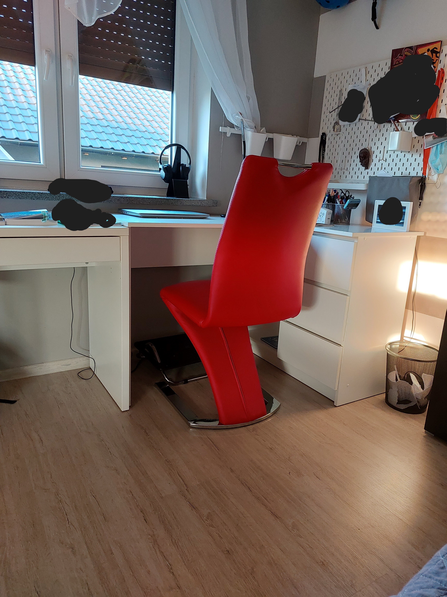

Interesuje się Motocyklami,nowymi technologiami sztuczną inteligencją AI. Lubię muzykę EDM Techno/ Electro House, jednak przy pracy nad projektem wybieram Chillout dla programistów :)
Jak lubię pracować:
Wolę pracować w godz. późnych wieczorach/w nocy, jednak jestem w stanie pracować rano jeśli wymaga tego sytuacja. Lubię ciekawe projekty które rozwijam od początku do końca. wolę przy robieńiu strony internetowej mieć dokładny obraz jak ma wyglądać (szablon).

Moja stanowisko pracy na dzień 13.09.2022r.
Jak spędzam czas wolny:
Czas wolny lubię spędzać na graniu na PlayStation 3, jeździe skuterem elektrycznym oraz motocyklami oraz uczeniu się programowania. Posiadam również swój kanał na platformie społeczniośćiowej YT.